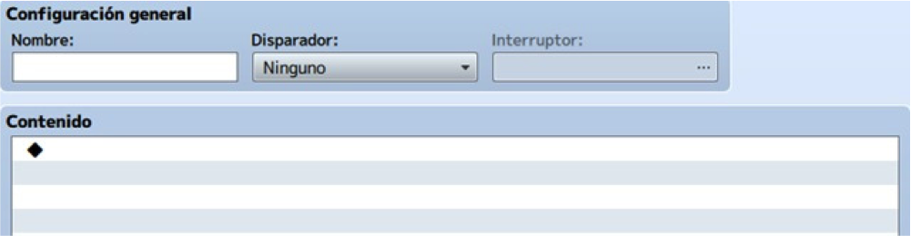
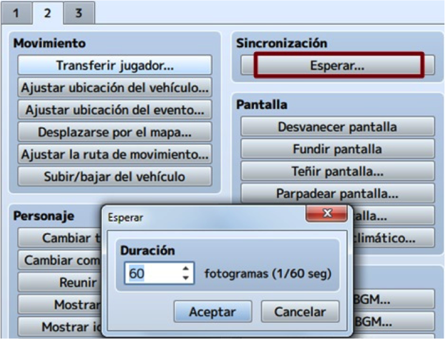
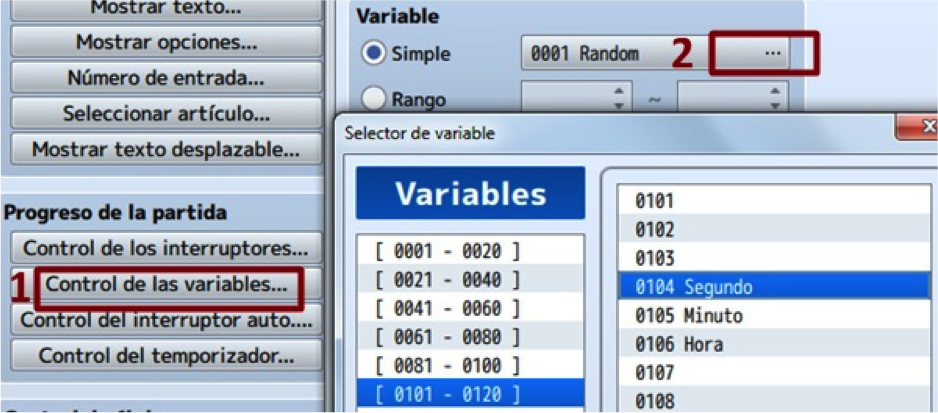
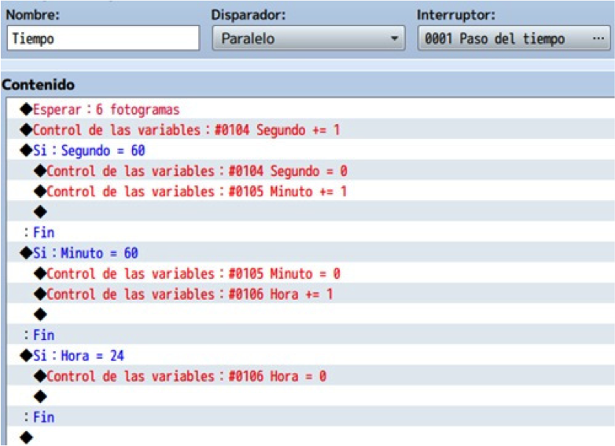
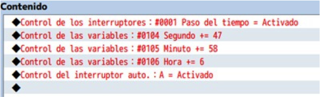

Los eventos comunes son muy útiles, y en este tema veremos como se crean, configuran y se lanzan.
Contienen códigos generales que están a disposición del juego en todo momento, independientemente del mapa en
el que estés. Además, los eventos comunes están recomendados para acciones que vas a repetir muchas veces.
Un evento común es un evento que será usado en varios mapas. De esta forma, en lugar de estar copiando el
mismo evento una y otra vez, se crea uno (en el mapa o mapas correspondientes) que inicie el evento común o
lo llame.
Para acceder a estos eventos, iremos a la base de datos y buscaremos la pestaña de eventos
comunes.

Cada evento común tiene cuatro apartados:
- Nombre: Importante elegir uno que defina la naturaleza del evento, para saber de qué va.
- Disparador: Al igual que el resto de eventos, los comunes tienen que activarse de alguna forma.
La peculiaridad de éstos es que sólo tienen tres posibilidades:
• Ninguno: Se ejecuta cuando se hace una llamada.
• Ejecución automática: Se ejecuta cuando el interruptor asignado se activa.
• Paralelo: Se ejecuta mientras el interruptor asignado esté activo.
- Interruptor: Simplemente se reserva uno para eventos comunes con ejecución automática o en
paralelo.
- Contenido: Aquí irá el código, las líneas de comandos de evento.
Vamos a empezar con el sistema de tiempo para RPG Maker MV.
El orden da igual: puedes crear primero el contenido y luego configurar el resto de apartados, o al revés.
En este caso, empezaremos por el contenido del evento común.
Debes tener presente que este evento común va a simular el paso del tiempo dentro del juego.
Existen plugins que toman el tiempo del sistema, por lo que el juego utilizaría tiempo real (no una
simulación).
La diferencia más evidente es que, en una simulación, el tiempo solamente pasa cuando juegas; en el otro caso,
el tiempo pasa aunque no se esté jugando.
Lo primero será asignar una porción de tiempo a cada frame del juego para que la simulación tenga sentido.
Esto se hace con el comando “Esperar” (en la segunda pestaña).

Por defecto, la duración es de 60 frames (fotogramas). Este número puede oscilar entre 1 y 999.
Si quieres que el tiempo pase más rápido, elige un número por debajo de 60; en caso contrario, un número por
encima.
En nuestro caso, seleccionaremos 6 fotogramas; esto es, cada segundo real se simula en el juego en una décima
parte (6/60).
Tras esto, tenemos que asignar variables para contemplar segundos, minutos y horas.

El comando "Control de las variables" está en la primera pestaña.
En la primera ventana que aparece, haz clic sobre el recuadro al lado de “simple” (en la imagen, donde dice
random) y en la siguiente ventana asigna posiciones a las variables que vayas a utilizar.
Lo siguiente será utilizar la variable segundo con la operación “sumar” y el operando constante con valor 1.
Esta línea, justo debajo del comando “Esperar”, hará que tras 6 frames (siguiendo nuestro ejemplo), se sume 1
a segundo.
A partir de aquí, utilizaremos tres derivaciones condicionales para añadir minutos, para añadir horas y para
resetear el reloj (cuando se llega a las 00:00:00).
El comando “Derivación condicional” está en la primera pestaña.
Una vez en la nueva ventana, haz clic sobre Variable y elige la correspondiente a segundo, aplicando el signo
igual (=) y poniendo 60 en constante.
Tras darle a “Aceptar”, dentro del contenido y debajo de la línea condicional (y antes de “Fin”), añadiremos
dos líneas más con el comando “Control de las variables”.
La primera usando segundo, operación ajustar y operando constante a 0; la segunda con minuto, operación sumar
y operando constante a 1.
Con esto, cada vez que segundo llegue a 60, se sumará 1 en minuto; además, segundo volverá a 0.
En la siguiente derivación condicional utilizaremos minuto, aplicando el signo igual (=) y 60 en constante.
Añadiremos dos líneas más con el comando “Control de las variables”.
La primera usando minuto, operación ajustar y operando constante a 0; la segunda con hora, operación sumar y
operando constante en 1.
Con esto, cada vez que minuto llegue a 60, se sumará 1 en hora; además, minuto volverá a 0.
En la última derivación condicional utilizaremos hora, aplicando el signo igual (=) y 24 en constante.
Añadiremos una línea más con el comando “Control de las variables”, usando hora, operación ajustar y operando
constante a 0.
Con esto, cada vez que hora llegue a 24, se reiniciará el reloj (simulando que pasó un día).
Finalmente, ponle un nombre al evento común, ajusta el disparador en paralelo y asigna un interruptor (con el nombre que prefieras) para activarlo.

Al tener el disparador en paralelo, este evento común se ejecutará si el interruptor asignado está activo.
¿Qué hay que hacer para esto?
Ir al mapa donde quieras que el tiempo empiece a contar, y crear un evento. En nuestro caso, en la casa del
PJ (donde se inicia la partida, tras la selección de personaje y la introducción).

Puedes colocarlo (el nuevo evento) en una esquina del mapa, ya que el PJ no va a interactuar con el mismo.
Lo bueno del evento común (el creado en la base de datos) es que, estando en paralelo, sólo necesita
activarse una vez (en el mapa escogido) y seguirá ejecutándose en el resto.
Si por algún motivo quieres parar el tiempo, simplemente desactiva el interruptor, creando un evento para
ello en el mapa o mapas correspondientes.
¿Y qué hay del contenido y configuración del nuevo evento?
Un evento con dos páginas: en la primera, se activa el interruptor designado en el evento común (“paso del
tiempo”, en nuestro caso).
Se inicializan las tres variables (simulando la hora que prefieras).
Y finalmente se activa un interruptor local para pasar a la segunda página, donde el evento se cierra
(si no, estaría ejecutándose en bucle infinito).
Además, el disparador de este evento debe estar en paralelo, para que no choque con otros eventos dentro
del mapa y siga ejecutándose, mientras el PJ interactúa.

Además de simular el paso del tiempo en la partida, este evento común puede utilizarse para, por ejemplo, que el PJ pueda consultar un reloj (en un tile), para crear otros eventos comunes basados en esto o para visualizar la hora en pantalla.